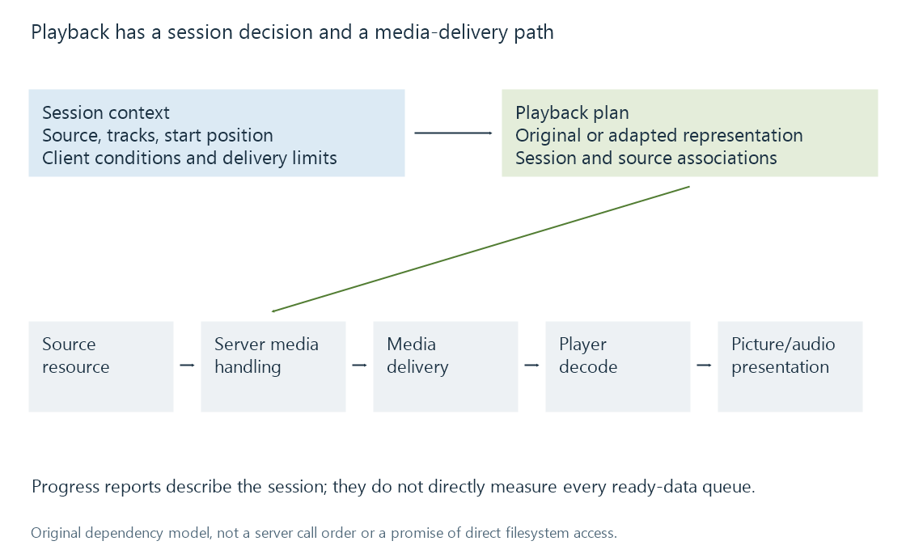

How a media server delivers playback
Media-server playback combines a session decision about sources and tracks with a media-delivery path that may preserve or convert the selected streams.
When someone presses Play, a media server needs to know which resource to use, which tracks the viewer wants, where playback should begin and what the receiving app can handle. Delivering bytes is one part of that exchange.
The same catalogue movie can therefore produce different playback sessions. A television may use its original source, while a phone receives another representation of the selected content.

The diagram is a dependency model, not Emby's internal call sequence.
A session chooses more than a title
| Selection or constraint | Why it matters |
|---|---|
| Media source | Defines the actual container, streams and timeline |
| Audio track | Can change codec, language and channel requirements |
| Subtitle track and presentation | Can use separate text, embedded data or rendered pixels |
| Requested starting position | Can require seeking or producing output from another point |
| Client capabilities | Describe what this playback path can accept |
| Delivery limits | Constrain the representation that can be sent |
Emby's public playback-information interface exposes source, track and capability context. Its result supplies media-source information in a playback session. A catalogue title alone cannot identify all those choices.
Consider a fictional source with supported video but unsupported selected audio. The video might remain compressed exactly as supplied while the audio is converted. Selecting another audio track could change that decision without changing the movie.
The media path has its own work
Direct Play uses the original media representation. Direct Stream preserves video while adapting packaging or other selected streams. Video transcoding produces a new encoded video representation.
These product modes describe useful categories, but their consequences are clearest when the selected video, audio and subtitle paths are considered separately. A process can copy one stream and convert another.
The server still has to access the source and supply the chosen delivery path. For generated output it may need to produce data ahead of playback. The receiving player then buffers, demultiplexes, decodes and presents the content.
The client always has a presentation job
Direct Play does not mean that compressed pictures can be drawn without decoding. It means the server has not needed to replace the media representation for this session. The player still interprets the container, reconstructs pictures and samples, synchronises them and sends them to display and audio output.
That distinction explains why a session can be cheap for the server and demanding for the client. It also explains why a healthy server-side conversion does not prove that the receiving app presents every frame smoothly.
State reports describe the session
The player can report its media position and session information. Saved history then uses those reports at the relevant user/item scope. A report that playback reached minute 20 does not establish how many bytes are currently buffered or how much of the movie has been converted on the server.
Resume positions explain the timeline association. Playback information helps distinguish the observations made at the different parts of the delivery path.
See Also
- What determines playback compatibility?
- Media source selection for playback
- Track selection and playback plans
- Direct Play in Emby
- Direct Stream in Emby
- Video transcoding in Emby